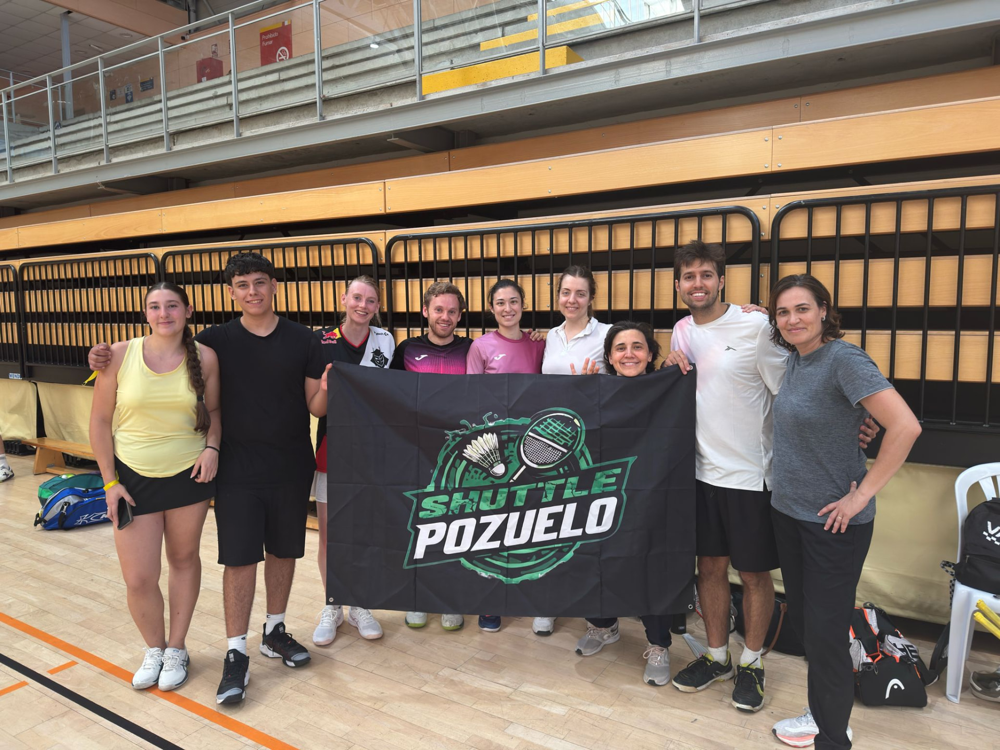

Comunidad
Un club cercano donde familias, jóvenes y adultos comparten pista y buen ambiente.
El club
Pozuelo Shuttle nace para acercar el bádminton a todo Pozuelo. Es un proyecto donde la pasión por el bádminton se convierte en comunidad, formando desde la base a jugadores de todas las edades, pero sobre todo disfrutamos de un deporte rápido, técnico y muy divertido.
Lo que nos mueve
Un club cercano donde familias, jóvenes y adultos comparten pista y buen ambiente.
Entrenadores titulados que adaptan cada sesión a la edad y al nivel de cada jugador.
Para quien quiere ir más allá: torneos, ligas y un equipo federado con ambición.
Dónde entrenamos
Entrenamos en el IES Camilo José Cela y en el colegio San Luis de los Franceses, en pistas cubiertas. Ponemos el material para las primeras clases: solo necesitas ropa deportiva y zapatillas de interior.
Pozuelo de Alarcón, Madrid
Quiero apuntarme